在我们开始深入研究如何在React中使用TypeScript之前，我们首先应该看一下我们想要实现什么。当一切工作正常时，TypeScript将帮助我们捕捉以下错误。
如果我们犯了这些错误，TypeScript可以帮助我们立即在编辑器中发现它们。
如果我们不使用TypeScript，我们将不得不在以后的测试中抓住这些错误。
我们可能会被迫做一些繁琐的调试来找到错误的原因。
现在的推理已经足够了。让我们开始动手吧!
Create React App with TypeScript
我们可以使用create-react-app来创建一个TypeScript应用，在其中添加一个
template argument to the initialisation script. So in order to create a TypeScript Create React App, run the following command:
npx create-react-app my-app --template typescript
运行该命令后，你应该有一个完整的使用TypeScript的基本react应用。
你可以通过在应用的根目录下运行npm start来启动该应用。
如果你看一下文件和文件夹，你会注意到这个应用与使用纯JavaScript的应用没有什么不同
一个使用纯JavaScript的应用。唯一的区别是.js和.jsx文件现在是.ts和.tsx文件，它们包含一些类型注释，并且根目录包含一个tsconfig.json文件。
现在，让我们看一下已经为我们创建的tsconfig.json文件。
{
"compilerOptions": {
"target": "es5",
"lib": [
"dom",
"dom.iterable",
"esnext"
],
"allowJs": true,
"skipLibCheck": true,
"esModuleInterop": true,
"allowSyntheticDefaultImports": true,
"strict": true,
"forceConsistentCasingInFileNames": true,
"noFallthroughCasesInSwitch": true,
"module": "esnext",
"moduleResolution": "node",
"resolveJsonModule": true,
"isolatedModules": true,
"noEmit": true,
"jsx": "react-jsx"
},
"include": [
"src"
]
}
选项现在已经键入了lib，其中包括例如浏览器API's类型的项目。
除了目前配置允许编译JavaScript文件外，其他一切都应该差不多了，因为allowJs被设置为true。
如果你需要混合使用TypeScript和JavaScript（例如，如果你正在将一个JavaScript项目转化为TypeScript或类似的东西），那会很好，但我们想创建一个纯粹的TypeScript应用，所以让我们把这个配置改为false。
在我们之前的项目中，我们使用eslint来帮助我们执行编码风格，我们在这个应用中也会这样做。我们不需要安装任何依赖项，因为create-react-app已经处理好了。
我们在.eslintrc中配置eslint，设置如下。
{
"env": {
"browser": true,
"es6": true,
"jest": true
},
"extends": [
"eslint:recommended",
"plugin:react/recommended",
"plugin:@typescript-eslint/recommended"
],
"plugins": ["react", "@typescript-eslint"],
"settings": {
"react": {
"pragma": "React",
"version": "detect"
}
},
"rules": {
"@typescript-eslint/explicit-function-return-type": 0,
"@typescript-eslint/explicit-module-boundary-types": 0,
"react/react-in-jsx-scope": 0
}
}
由于基本上所有React组件的返回类型都是JSX.Element或null，我们通过禁用explicit-function-return-type和explicit-module-boundary-types的规则，将默认的linting规则放宽一点。
现在我们不需要到处明确说明我们的函数返回类型。我们也将禁用react/react-in-jsx-scope，因为不再需要在每个文件中导入React了。
接下来，我们需要让我们的linting脚本解析*.tsx文件，这是相当于react's JSX文件的TypeScript。
我们可以通过改变.package.json中的lint命令来做到这一点。
{
// ...
"scripts": {
"start": "react-scripts start",
"build": "react-scripts build",
"test": "react-scripts test",
"eject": "react-scripts eject",
"lint": "eslint './src/**/*.{ts,tsx}'" // highlight-line
},
// ...
}
如果你使用的是Windows，你可能需要为linting路径使用双引号。"lint":"eslint \"./src/**/*.{ts,tsx}\"".
React components with TypeScript
让我们考虑下面这个JavaScript React的例子。
import React from "react";
import ReactDOM from 'react-dom';
import PropTypes from "prop-types";
const Welcome = props => {
return <h1>Hello, {props.name}</h1>;
};
Welcome.propTypes = {
name: PropTypes.string
};
const element = <Welcome name="Sara" />;
ReactDOM.render(element, document.getElementById("root"));
在这个例子中，我们有一个叫做Welcome的组件，我们把一个name作为prop传给它。然后它将这个名字渲染到屏幕上。 我们知道name应该是一个字符串，我们使用part 5中介绍的prop-types包来接收关于组件的prop的理想类型的提示和关于无效prop类型的警告。
使用TypeScript，我们不再需要prop-types包。我们可以在TypeScript的帮助下定义类型，就像我们为普通函数定义类型一样，因为反应组件不过是单纯的函数。我们将使用一个接口作为参数类型（即props），并将JSX.Element作为任何反应组件的返回类型。
比如说。
const MyComp1 = () => {
// TypeScript automatically infers the return type of this function
// (i.e., a react component) as `JSX.Element`.
return <div>TypeScript has auto inference!</div>
}
const MyComp2 = (): JSX.Element => {
// We are explicitly defining the return type of a function here
// (i.e., a react component).
return <div>TypeScript React is easy.</div>
}
interface MyProps {
label: string;
price?: number;
}
const MyComp3 = ({ label, price }: MyProps): JSX.Element => {
// We are explicitly defining the parameter types using interface `MyProps`
// and return types as `JSX.Element` in this function (i.e., a react component).
return <div>TypeScript is great.</div>
}
const MyComp4 = ({ label, price }: { label: string, price: number }) => {
// We are explicitly defining the parameter types using an inline interface
// and TypeScript automatically infers the return type as JSX.Element of the function (i.e., a react component).
return <div>There is nothing like TypeScript.</div>
}
现在，让我们回到我们的代码例子，看看我们将如何在TypeScript中定义Welcome组件的类型。
interface WelcomeProps {
name: string;
}
const Welcome = (props: WelcomeProps) => {
return <h1>Hello, {props.name}</h1>;
};
const element = <Welcome name="Sara" />;
ReactDOM.render(element, document.getElementById("root"));
我们定义了一个新的类型，WelcomeProps，并将其传递给函数的参数类型。
const Welcome = (props: WelcomeProps) => {
你可以用不那么冗长的语法来写同样的东西。
const Welcome = ({ name }: { name: string }) => (
<h1>Hello, {name}</h1>
);
现在我们的编辑器知道nameprop是一个字符串。
Exercise 9.14.
9.14.
用TypeScript创建一个新的Create React App，并为该项目设置eslint，类似于我们刚才的做法。
这个练习与你在课程的第一章节中已经完成的练习类似，但使用TypeScript和一些额外的调整。首先，将index.tsx的内容修改为以下内容。
import React from "react";
import ReactDOM from "react-dom";
import App from "./App";
ReactDOM.render(<App />, document.getElementById("root"));
和App.tsx的内容为。
const App = () => {
const courseName = "Half Stack application development";
const courseParts = [
{
name: "Fundamentals",
exerciseCount: 10
},
{
name: "Using props to pass data",
exerciseCount: 7
},
{
name: "Deeper type usage",
exerciseCount: 14
}
];
return (
<div>
<h1>{courseName}</h1>
<p>
{courseParts[0].name} {courseParts[0].exerciseCount}
</p>
<p>
{courseParts[1].name} {courseParts[1].exerciseCount}
</p>
<p>
{courseParts[2].name} {courseParts[2].exerciseCount}
</p>
<p>
Number of exercises{" "}
{courseParts.reduce((carry, part) => carry + part.exerciseCount, 0)}
</p>
</div>
);
};
export default App;
并删除不必要的文件。
整个应用现在是在一个组件中。这不是我们想要的，所以重构代码，使其由三个组件组成。标题、内容和总计。所有的数据仍然保存在App组件中，它将所有必要的数据作为props传递给每个组件。请确保为每个组件的props添加类型声明！
Header组件应该负责渲染课程的名称。Content应该渲染不同部分的名称和每个部分的练习量，而Total应该渲染所有部分练习的总和。
App组件应该看起来有点像这样。
const App = () => {
// const-declarations
return (
<div>
<Header name={courseName} />
<Content ... />
<Total ... />
</div>
)
};
Deeper type usage
在前面的练习中，我们有一个课程的三个部分，所有部分都有相同的属性name和exerciseCount。但是，如果我们需要为这些部分提供额外的属性，并且每个部分都需要不同的属性呢？从代码上看，这将是怎样的？让我们考虑下面的例子。
const courseParts = [
{
name: "Fundamentals",
exerciseCount: 10,
description: "This is an awesome course part"
},
{
name: "Using props to pass data",
exerciseCount: 7,
groupProjectCount: 3
},
{
name: "Deeper type usage",
exerciseCount: 14,
description: "Confusing description",
exerciseSubmissionLink: "https://fake-exercise-submit.made-up-url.dev"
}
];
在上面的例子中，我们为每个课程部分添加了一些额外的属性。
每个部分都有name和exerciseCount属性。
但第一个和第三个也有一个叫做描述的属性，并且
第二和第三章节也有一些明显的附加属性。
让我们想象一下，我们的应用一直在增长，而且我们需要在代码中传递不同的课程部分。
在此基础上，还有额外的属性和课程部分被添加到组合中。
我们怎么能知道我们的代码能够正确处理所有不同类型的数据，而且我们不会忘记在某些页面上渲染一个新的课程部分呢？这就是TypeScript真正派上用场的地方!
让我们开始为我们不同的课程部分定义类型。
interface CoursePartOne {
name: "Fundamentals";
exerciseCount: number;
description: string;
}
interface CoursePartTwo {
name: "Using props to pass data";
exerciseCount: number;
groupProjectCount: number;
}
interface CoursePartThree {
name: "Deeper type usage";
exerciseCount: number;
description: string;
exerciseSubmissionLink: string;
}
接下来我们将创建一个所有这些类型的union。
然后我们可以用它来为我们的数组定义一个类型，它应该接受这些课程部分的任何类型。
type CoursePart = CoursePartOne | CoursePartTwo | CoursePartThree;
现在我们可以为我们的courseParts变量设置类型。
如果我们为一个属性使用了错误的类型，使用了一个额外的属性，或者忘记设置一个预期的属性，我们的编辑器会自动警告我们。
你可以通过注释任何课程部分的任何属性来测试这一点。
多亏了name string literal，TypeScript可以识别哪个课程部分需要哪些额外的属性，即使该变量被定义为使用union类型。
但我们还不满足！我们还需要继续努力。我们的类型中仍然有很多重复，我们想避免这种情况。
我们首先要确定所有课程部分的共同属性，并定义一个包含这些属性的基本类型。
然后我们将扩展该基础类型来创建我们的特定部分类型。
interface CoursePartBase {
name: string;
exerciseCount: number;
}
interface CoursePartOne extends CoursePartBase {
name: "Fundamentals";
description: string;
}
interface CoursePartTwo extends CoursePartBase {
name: "Using props to pass data";
groupProjectCount: number;
}
interface CoursePartThree extends CoursePartBase {
name: "Deeper type usage";
description: string;
exerciseSubmissionLink: string;
}
我们现在应该如何在我们的组件中使用这些类型？
在TypeScript中使用这种类型的一个方便的方法是使用_switch case_表达式。一旦你明确声明或TypeScript推断出一个变量是联盟类型，并且类型联盟中的每个类型都包含某个属性。
我们可以使用它作为一个类型标识符。
然后我们可以围绕该属性建立一个switch case，TypeScript会知道每个case块中有哪些属性。
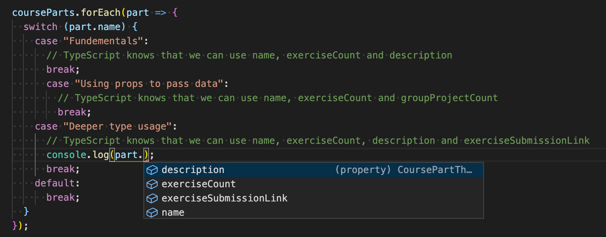
在上面的例子中，TypeScript知道一个part的类型是CoursePart。然后它可以推断出part是CoursePartOne、CoursePartTwo或CoursePartThree类型。
每个类型的名称都是不同的，所以我们可以用它来识别每个类型，TypeScript可以让我们知道每个案例块中哪些属性是可用的。
如果你试图在"使用prop传递数据"块中使用part.description，TypeScript会产生一个错误。
添加新类型怎么办？如果我们要添加一个新的课程部分，知道我们的代码中是否已经实现了对该类型的处理不是很好吗？
在上面的例子中，一个新的类型会进入default块，而对于一个新的类型，什么也不会被打印出来。
当然，有时候，这是完全可以接受的，例如，如果你只想处理一个类型联盟的特定（但不是全部）情况，但在大多数情况下，建议单独处理所有的变化。
通过TypeScript，我们可以使用一种叫做详尽的类型检查的方法。它的基本原理是，如果我们遇到一个意外的值，我们就调用一个接受类型为never并且返回类型为never的函数。
这个函数的直接版本可以是这样的。
/**
* Helper function for exhaustive type checking
*/
const assertNever = (value: never): never => {
throw new Error(
`Unhandled discriminated union member: ${JSON.stringify(value)}`
);
};
如果我们现在把我们的default块的内容替换成。
default:
return assertNever(part);
同时注释掉Deeper类型用法案例块，我们会看到以下错误。
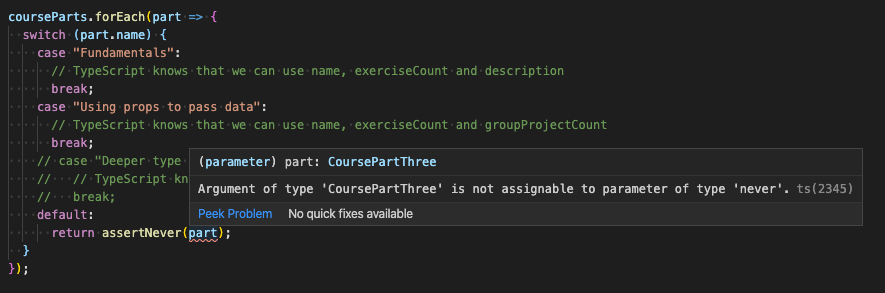
错误信息说，"CoursePartThree''类型的参数不能分配给''never"类型的参数，这告诉我们，我们在某个地方使用了一个不应该被使用的变量。这告诉我们有些东西需要被修正。
当我们从更深类型的使用案例块中删除注释时，你会看到这个错误消失了。
Exercise 9.15.
9.15.
现在让我们继续扩展练习9.14中创建的应用。首先，添加类型信息，用下面例子中的变量courseParts代替。
// new types
interface CoursePartBase {
name: string;
exerciseCount: number;
type: string;
}
interface CourseNormalPart extends CoursePartBase {
type: "normal";
description: string;
}
interface CourseProjectPart extends CoursePartBase {
type: "groupProject";
groupProjectCount: number;
}
interface CourseSubmissionPart extends CoursePartBase {
type: "submission";
description: string;
exerciseSubmissionLink: string;
}
type CoursePart = CourseNormalPart | CourseProjectPart | CourseSubmissionPart;
// this is the new coursePart variable
const courseParts: CoursePart[] = [
{
name: "Fundamentals",
exerciseCount: 10,
description: "This is the leisured course part",
type: "normal"
},
{
name: "Advanced",
exerciseCount: 7,
description: "This is the harded course part",
type: "normal"
},
{
name: "Using props to pass data",
exerciseCount: 7,
groupProjectCount: 3,
type: "groupProject"
},
{
name: "Deeper type usage",
exerciseCount: 14,
description: "Confusing description",
exerciseSubmissionLink: "https://fake-exercise-submit.made-up-url.dev",
type: "submission"
}
]
现在我们知道，两个接口CourseNormalPart和CourseSubmissionPart不仅共享基本属性，而且还有一个叫做description的属性，在两个接口中都是一个字符串。
你的第一个任务是声明一个新的接口，包括description属性并扩展CoursePartBase接口。然后修改代码，使你能从CourseNormalPart和CourseSubmissionPart中删除description属性而不产生任何错误。
然后创建一个组件Part，渲染每种类型的课程部分的所有属性。使用基于开关案例的穷举式检查!在组件Content中使用新组件。
最后，添加另一个具有以下属性的课程部分界面。name, exerciseCount, description和requirements，后者是一个字符串数组。这种类型的对象如下所示：下面这样。
{
name: "Backend development",
exerciseCount: 21,
description: "Typing the backend",
requirements: ["nodejs", "jest"],
type: "special"
}
然后将该接口添加到类型联盟CoursePart中，并在courseParts变量中添加相应的数据。现在，如果你没有正确地修改你的Content组件，你应该得到一个错误，因为你还没有为第四个课程部分类型添加支持。对Content进行必要的修改，使新的课程部分的所有属性也得到渲染，并且编译器不会产生任何错误。
最终的结果可能是这样的。
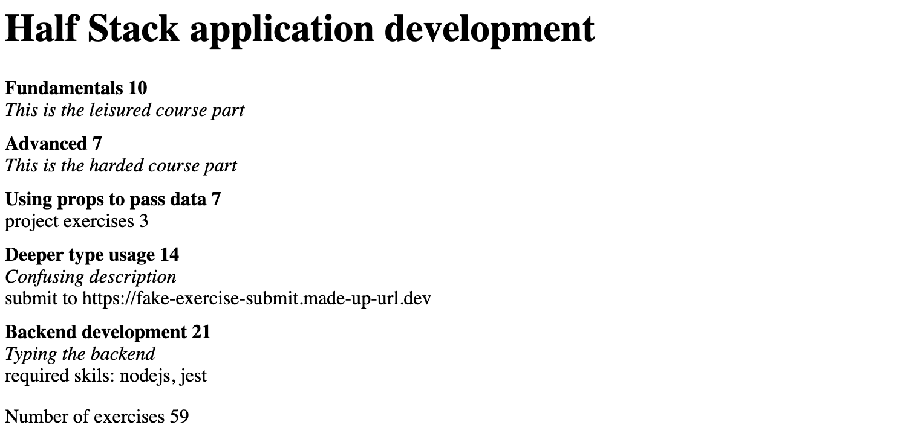
A note about defining object types
我们在上一节中使用了接口来定义对象类型，例如日记条目。
interface DiaryEntry {
id: number;
date: string;
weather: Weather;
visibility: Visibility;
comment?: string;
}
以及在本节的课程部分
interface CoursePartBase {
name: string;
exerciseCount: number;
}
我们实际上可以通过使用类型别名达到同样的效果。
type DiaryEntry = {
id: number;
date: string;
weather: Weather;
visibility: Visibility;
comment?: string;
}
在大多数情况下，你可以使用type或interface，无论你喜欢哪种语法。然而，有几件事需要注意。
例如，如果你定义了多个同名的接口，它们将产生一个合并的接口，而如果你试图定义多个同名的类型，将导致一个错误，说明同名的类型已经被声明。
TypeScript文档建议在大多数情况下使用接口。
Working with an existing codebase
当第一次潜入一个现有的代码库时，最好能对项目的惯例和结构有一个整体的认识。你可以通过阅读版本库根目录下的README.md开始你的研究。通常，README包含对应用的简要描述和使用要求，以及如何启动它进行开发。
如果README不可用，或者有人 "节省时间"，把它作为一个存根，你可以偷看一下package.json。
启动应用并点击一下以验证你有一个功能性的开发环境总是一个好主意。
你也可以浏览文件夹结构，以了解该应用的功能和/或使用的架构。这些并不总是清晰的，开发者可能选择了一种你不熟悉的方式来组织代码。本章节其余部分使用的示例项目是按功能组织的。你可以看到应用有哪些页面，以及一些一般的组件，例如模态和状态。请记住，这些功能可能有
不同的范围。例如，模态是可见的UI级组件，而状态则与业务逻辑相当，并将数据组织在引擎盖下供应用的其他部分使用。
TypeScript为你提供了类型，告诉你可以期待什么样的数据结构、函数、组件和状态。 你可以尝试寻找types.ts或类似的东西来让你开始。VSCode是一个很大的帮助，仅仅突出变量和参数就可以给你相当多的启示。所有这些自然取决于项目中是如何使用类型的。
如果项目有单元、集成或端到端的测试，阅读这些测试很可能是有益的。当重构或创建应用的新功能时，测试案例是你最重要的工具。你要确保在敲打代码时不破坏任何现有功能。在改变代码时，TypeScript也可以在参数和返回类型方面给你指导。
请记住，阅读代码本身就是一种技能，如果你在第一次阅读时不理解代码，也不要担心。 代码可能有很多角落的情况，而且在整个开发周期中，可能有一些逻辑片段被添加到这里或那里。很难想象以前的开发者会遇到什么样的麻烦。把这一切想象成树木的生长环。了解这一切需要深入挖掘代码和业务领域的需求。你读的代码越多，你就越能做到这一点。你会读到比你要生产的更多的代码。
Patientor frontend
是时候动手为我们在练习9.8.-9.13中建立的后端完成前端了。
在深入研究代码之前，让我们同时启动前端和后端。
如果一切顺利，你应该看到一个病人列表页面。它从我们的后端获取一个病人列表，并以一个简单的表格形式渲染在屏幕上。还有一个按钮用于在后端创建新的病人。由于我们使用的是模拟数据而不是数据库，所以数据不会持续存在--关闭后端将删除我们添加的所有数据。UI设计显然不是创建者的强项，所以我们现在先不考虑UI。
在验证了一切正常后，我们可以开始研究代码。所有有趣的东西都在src文件夹中。为了你的方便，已经有一个types.ts文件用于应用中使用的基本类型，你将不得不在练习中扩展或重构它。
原则上，我们可以在后端和前端使用相同的类型，但通常前端有不同的数据结构和数据用例，这导致类型不同。
例如，前端有一个状态，可能想把数据保存在对象或地图中，而后端使用数组。前端也可能不需要保存在后端的数据对象的所有字段，它可能需要添加一些新的字段来用于渲染。
文件夹结构看起来如下。
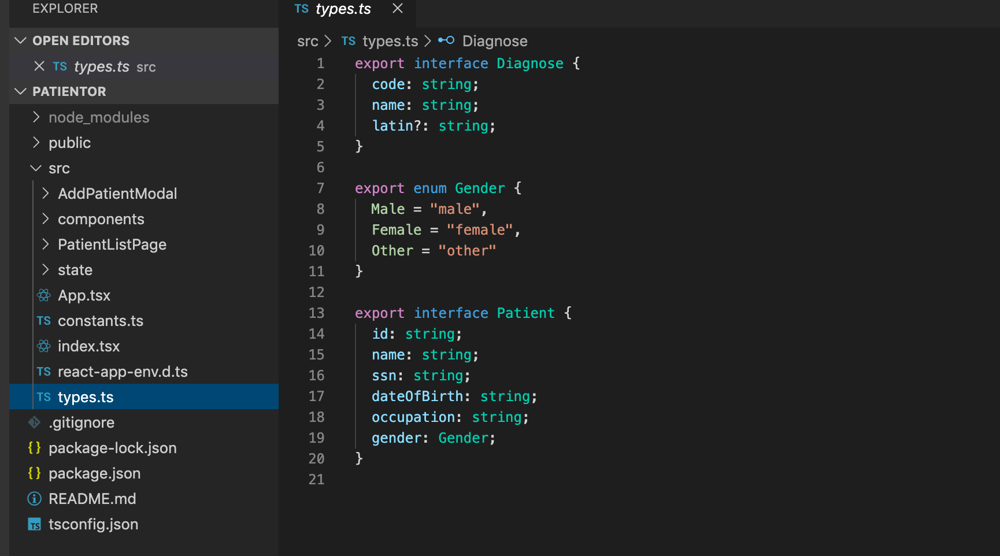
如你所料，目前有两个主要组件。AddPatientModal和PatientListPage。state文件夹包含前端的状态处理。
state文件夹中的代码的主要功能是将我们的数据保存在一个地方，并提供简单的操作来改变我们应用的状态。
State handling
让我们更仔细地研究一下状态处理，因为很多东西似乎是在引擎盖下发生的，它与迄今为止课程中使用的方法有一些不同。
状态管理是使用React Hooks useContext 和 useReducer建立的。这是一个很好的设置，因为我们知道这个应用将是相当小的，我们不想使用redux或其他类似的库来进行状态管理。
有很多好的材料，例如这篇文章，关于这种状态管理的方法。
在这个应用中采取的方法使用了React context，根据其文档。
......被设计用来共享那些可以被认为是React组件树的 "全局 "数据，例如当前的认证用户、主题或首选语言。
在我们的例子中，"全局"、共享的数据是应用状态和调度函数，用于对数据进行更改。在许多方面，我们的代码很像我们在第6章节中使用的基于Redux的状态管理，但由于它不需要使用任何外部库，所以更加轻量级。这一部分假设你至少熟悉Redux的工作方式，例如，你至少应该涵盖第六章节的第一节。
我们应用的上下文有一个元组，包含应用的状态和改变状态的调度器。
应用状态的类型如下。
export type State = {
patients: { [id: string]: Patient };
};
状态是一个有一个键的对象，patients，它有一个字典，或者简单说是一个有字符串键的对象，有一个Patient对象作为值。索引只能是一个字符串或一个数字，因为你可以用这些来访问对象的值。这就强制要求状态符合我们想要的形式，并防止开发者误用状态。
但是要注意一件事!当一个类型被声明为patients的类型时，TypeScript实际上没有办法知道你试图访问的键是否真的存在。因此，如果我们试图通过一个不存在的id来访问一个病人，编译器会认为返回的值是Patient类型，并且在试图访问其属性时不会抛出错误。
const myPatient = state.patients['non-existing-id'];
console.log(myPatient.name); // no error, TypeScript believes that myPatient is of type Patient
为了解决这个问题，我们可以将病人值的类型定义为Patient和undefined的联合，方法如下。
export type State = {
patients: { [id: string]: Patient | undefined };
};
这将导致编译器给出以下警告。
const myPatient = state.patients['non-existing-id'];
console.log(myPatient.name); // error, Object is possibly 'undefined'
如果你使用来自外部的数据或使用用户输入的值来访问代码中的数据，这种额外的类型安全总是很好实现的。但如果你确信你只处理实际存在的数据，那么没有人阻止你使用第一个提出的解决方案。
尽管我们在这个课程部分没有使用它们，但值得一提的是，一个更严格的类型方式是使用Map对象，你可以为它的键和内容都声明一个类型。Map's accessor函数get()总是返回声明的值类型和未定义的联合体，所以TypeScript自动要求你对从Map检索的数据执行有效性检查。
interface State {
patients: Map<string, Patient>;
}
...
const myPatient = state.patients.get('non-existing-id'); // type for myPatient is now Patient | undefined
console.log(myPatient.name); // error, Object is possibly 'undefined'
console.log(myPatient?.name); // valid code, but will log 'undefined'
就像redux一样，所有的状态操作都是由一个reducer完成的。它在文件reducer.ts中与Action类型一起定义，看起来如下。
export type Action =
| {
type: "SET_PATIENT_LIST";
payload: Patient[];
}
| {
type: "ADD_PATIENT";
payload: Patient;
};
减速器看起来和我们在开始使用Redux工具包之前在第6章节写的那些很相似。它为每种类型的动作改变状态。
export const reducer = (state: State, action: Action): State => {
switch (action.type) {
case "SET_PATIENT_LIST":
return {
...state,
patients: {
...action.payload.reduce(
(memo, patient) => ({ ...memo, [patient.id]: patient }),
{}
),
...state.patients
}
};
case "ADD_PATIENT":
return {
...state,
patients: {
...state.patients,
[action.payload.id]: action.payload
}
};
default:
return state;
}
};
主要区别在于，现在的状态是一个字典（或一个对象），而不是我们在第六章节中使用的数组。
在文件state.ts中发生了很多事情，它负责设置上下文。
主要内容是useReducer钩子
用来创建状态和调度函数，并把它们传递给上下文提供者。
export const StateProvider = ({
reducer,
children
}: StateProviderProps) => {
const [state, dispatch] = useReducer(reducer, initialState); // highlight-line
return (
<StateContext.Provider value={[state, dispatch]}> // highlight-line
{children}
</StateContext.Provider>
);
};
由于index.ts中的设置，提供者使state和dispatch函数在所有组件中可用。
import { reducer, StateProvider } from "./state";
ReactDOM.render(
<StateProvider reducer={reducer}>
<App />
</StateProvider>,
document.getElementById('root')
);
它还定义了useStateValue钩。
export const useStateValue = () => useContext(StateContext);
需要访问状态或调度器的组件使用它来获得这些。
import { useStateValue } from "../state";
// ...
const PatientListPage = () => {
const [{ patients }, dispatch] = useStateValue();
// ...
}
如果这看起来很混乱，请不要担心；在你研究了context's documentation和它在state management中的使用之前，都是如此。你不需要完全理解这一切来做练习!
实际上，当你开始在一个现有的代码库上工作时，一开始你并不完全理解引擎盖下发生的事情，这是非常普遍的。如果应用的结构正确（并且有一套适当的测试），你可以相信，如果你仔细修改，尽管你不了解所有的内部机制，应用仍然可以工作。随着时间的推移，你会掌握更多不熟悉的部分，但在处理大型代码库时，这不会在一夜之间发生。
Patient listing page
我们来看看PatientListPage/index.ts，因为你可以从那里得到启发，帮助你从后端获取数据并更新应用的状态。
PatientListPage uses our custom hook to inject the state, and the dispatcher for updating it.
当我们列出病人时，我们只需要从状态中解除patients属性的结构。
import { useStateValue } from "../state";
const PatientListPage = () => {
const [{ patients }, dispatch] = useStateValue();
// ...
}
我们也使用用useState钩子创建的应用状态来管理模式的可见性和表单错误处理。
const [modalOpen, setModalOpen] = React.useState<boolean>(false);
const [error, setError] = React.useState<string | undefined>();
我们给useState钩子一个类型参数，然后将其应用于实际状态。所以modalOpen是一个boolean，error的类型是string | undefined。
由useState钩子返回的两个设置函数都是根据给定的类型参数只接受参数的函数，例如，setModalOpen函数的确切类型是React.Dispatch<React.SetStateAction<boolean>。
我们还有openModal和closeModal辅助函数，以提高可读性和便利性。
const openModal = (): void => setModalOpen(true);
const closeModal = (): void => {
setModalOpen(false);
setError(undefined);
};
前端的类型是基于你在前一部分开发后端时创建的。
当组件App挂载时，它使用Axios从后端获取病人。注意我们是如何给axios.get函数一个类型参数来描述响应数据的类型。
React.useEffect(() => {
axios.get<void>(`${apiBaseUrl}/ping`);
const fetchPatientList = async () => {
try {
const { data: patients } = await axios.get<Patient[]>(
`${apiBaseUrl}/patients`
);
dispatch({ type: "SET_PATIENT_LIST", payload: patients });
} catch (error: unknown) {
let errorMessage = 'Something went wrong.'
if(axios.isAxiosError(error) && error.response) {
errorMessage += ' Error: ' + error.response.data.message;
}
console.error(errorMessage);
}
};
fetchPatientList();
}, [dispatch]);
**一个警告！**向Axios传递一个类型参数不会验证任何数据。这是相当危险的，特别是当你使用外部API的时候。你可以创建自定义的验证函数，接收整个有效载荷并返回正确的类型，或者你可以使用类型保护。两者都是有效的选择。也有很多库通过不同的模式提供验证，例如io-ts。为了简单起见，我们将继续相信我们自己的工作，并相信我们将从后端获得正确形式的数据。
由于我们的应用相当小，我们将通过简单地调用dispatch函数来更新状态，该函数由useStateValue钩提供给我们。
编译器通过确保我们根据我们的Action类型和预定义的类型字符串和有效载荷来调度行动。
dispatch({ type: "SET_PATIENT_LIST", payload: patients });
Exercises 9.16.-9.18.
我们将很快为我们的应用添加一个新的类型，Entry，它代表一个轻量级的病人日记条目。它包括一个日志文本，即一个描述，一个创建日期，关于创建它的专家的信息和可能的诊断代码。诊断代码与从/api/diagnoses端点返回的ICD-10代码相匹配。我们的天真实现将是，一个病人有一个条目数组。
在进入这个问题之前，让我们做一些准备工作。
9.16: patientor, step1
创建一个端点/api/patients/:id，返回一个病人的所有病人信息，包括对所有病人来说仍然是空的病人条目数组。暂时将后端类型扩展如下。
// eslint-disable-next-line @typescript-eslint/no-empty-interface
export interface Entry {
}
export interface Patient {
id: string;
name: string;
ssn: string;
occupation: string;
gender: Gender;
dateOfBirth: string;
entries: Entry[] // highlight-line
}
export type PublicPatient = Omit<Patient, 'ssn' | 'entries' > // highlight-line
响应看起来应该如下。
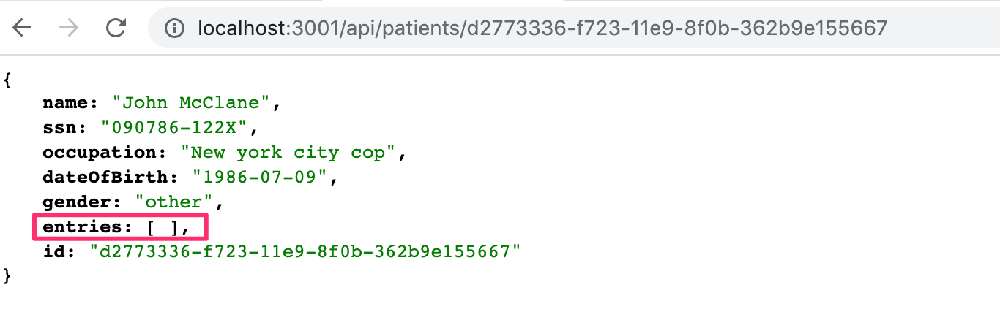
9.17: patientor, step2
创建一个页面，在前端显示病人的全部信息。
用户应该能够访问一个病人的信息，例如，通过点击病人的名字。
从前面练习中创建的端点获取数据。从后端获取病人信息后，将获取的信息添加到应用的状态中。如果信息已经在应用的状态中，即如果用户多次访问同一个病人的信息，则不要获取该信息。
由于我们现在有了上下文中的状态，你需要定义一个新的动作类型来更新单个病人的数据。
应用使用我们在第7章节中提到的MaterialUI进行样式设计。你也可以把它用于新的组件，但这取决于你，因为我们现在的主要重点是TypeScript。
应用还使用React Router来控制哪个视图在前端可见。如果你还没有掌握路由器的工作原理，你可能想看一下第7章节。
结果可能是这样的。
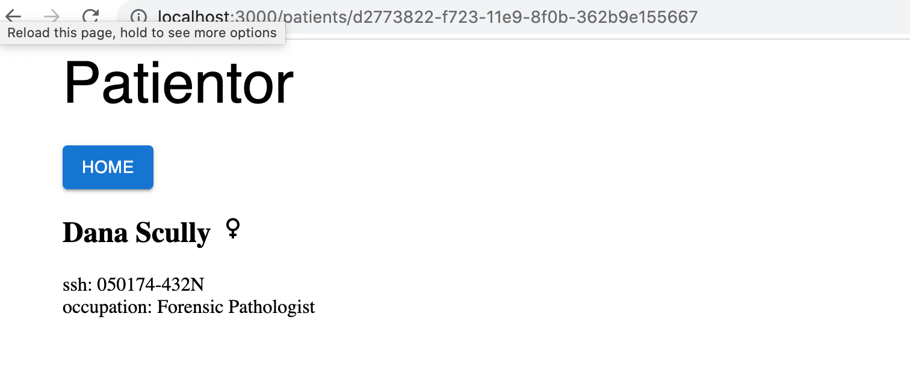
示例使用Material UI Icons来表示性别。
注意，为了访问url中的id，你需要给useParams一个合适的类型参数。
const { id } = useParams<{ id: string }>();
9.18: patientor, step3
目前，我们在分派动作的地方创建action对象，例如，App组件有以下内容。
dispatch({
type: "SET_PATIENT_LIST", payload: patientListFromApi
});
在文件src/state/reducer.ts中定义动作创建者函数并重构代码以使用它们。
例如，App应该变成下面的样子。
import { useStateValue, setPatientList } from "./state";
// ...
dispatch(setPatientList(patientListFromApi));
Full entries
在练习9.10.中，我们实现了一个用于获取各种诊断信息的端点，但我们仍然完全没有使用这个端点。
既然我们现在有了一个查看病人信息的页面，那么把我们的数据扩展一下就好了。
让我们为我们的病人数据添加一个Entry字段，这样一个病人的数据就包含了他们的医疗条目，包括可能的诊断。
让我们从后端抛弃旧的病人种子数据，开始使用这个扩展格式。
**注意：**这次，数据不是以.json格式，而是以.ts格式。你应该已经实现了完整的Gender和Patient类型，所以如果需要的话，只需纠正它们被导入的路径。
现在让我们根据我们拥有的数据创建一个适当的条目类型。
如果我们仔细看一下这些数据，我们可以看到这些条目实际上是非常不同的。例如，让我们看一下前两个条目。
{
id: 'd811e46d-70b3-4d90-b090-4535c7cf8fb1',
date: '2015-01-02',
type: 'Hospital',
specialist: 'MD House',
diagnosisCodes: ['S62.5'],
description:
"Healing time appr. 2 weeks. patient doesn't remember how he got the injury.",
discharge: {
date: '2015-01-16',
criteria: 'Thumb has healed.',
}
}
...
{
id: 'fcd59fa6-c4b4-4fec-ac4d-df4fe1f85f62',
date: '2019-08-05',
type: 'OccupationalHealthcare',
specialist: 'MD House',
employerName: 'HyPD',
diagnosisCodes: ['Z57.1', 'Z74.3', 'M51.2'],
description:
'Patient mistakenly found himself in a nuclear plant waste site without protection gear. Very minor radiation poisoning. ',
sickLeave: {
startDate: '2019-08-05',
endDate: '2019-08-28'
}
}
随即，我们可以看到，虽然前几个字段是相同的，但第一个条目有一个discharge字段，第二个条目有employerName和sickLeave字段。
所有条目似乎都有一些共同的字段，但有些字段是条目特有的。
当查看类型时，我们可以看到，实际上有三种条目。职业保健、医院和健康检查。
这表明我们需要三种独立的类型。由于它们都有一些共同的字段，我们可能只想创建一个基本的条目接口，我们可以用每个类型中的不同字段来扩展。
在看数据时，似乎字段id、description、date和specialist都是可以在每个条目中找到的东西。除此之外，diagnosisCodes似乎只出现在一个OccupationalHealthCare和一个Hospital类型的条目中。由于即使在这些类型的条目中也并不总是使用它，因此可以认为该字段是可选的。我们可以考虑在HealthCheck类型中也添加它。
因为它可能只是在这些特定的条目中没有被使用。
所以我们的BaseEntry可以从每个类型中扩展出来，如下。
interface BaseEntry {
id: string;
description: string;
date: string;
specialist: string;
diagnosisCodes?: string[];
}
如果我们想进一步调整，因为我们已经在后端定义了一个诊断类型，我们可能只想直接引用诊断类型的代码字段，以防其类型发生变化。
我们可以这样做。
interface BaseEntry {
id: string;
description: string;
date: string;
specialist: string;
diagnosisCodes?: Array<Diagnosis['code']>;
}
正如你可能记得的，Array<Type>只是说Type[]的一种替代方式。在这样的情况下，使用数组约定更清楚，因为另一种选择是通过说Diagnosis[''code'][]来定义类型，这看起来有点奇怪。
现在我们已经定义了BaseEntry，我们可以开始创建我们将实际使用的扩展条目类型。让我们从创建HealthCheckEntry类型开始。
类型HealthCheck的条目包含字段HealthCheckRating，它是一个从0到3的整数，0表示健康，3表示严重风险。这是一个枚举定义的完美案例。
有了这些规范，我们可以这样写一个HealthCheckEntry类型定义。
export enum HealthCheckRating {
"Healthy" = 0,
"LowRisk" = 1,
"HighRisk" = 2,
"CriticalRisk" = 3
}
interface HealthCheckEntry extends BaseEntry {
type: "HealthCheck";
healthCheckRating: HealthCheckRating;
}
现在我们只需要创建OccupationalHealthcareEntry和HospitalEntry类型，这样我们就可以把它们结合在一个联盟中，并像这样把它们输出为Entry类型。
export type Entry =
| HospitalEntry
| OccupationalHealthcareEntry
| HealthCheckEntry;
关于联合的一个重要观点是，当你用它们和_Omit_来排除一个属性时，它的工作方式可能是意想不到的。假设我们想从每个_Entry_中删除_id_。我们可以考虑使用_Omit<Entry, ''id'>_，但是它不会像我们期望的那样工作。事实上，产生的类型将只包含共同的属性，而不包含它们不共享的属性。一个可能的变通方法是定义一个特殊的类似于Omit的函数来处理这种情况。
// Define special omit for unions
type UnionOmit<T, K extends string | number | symbol> = T extends unknown ? Omit<T, K> : never;
// Define Entry without the 'id' property
type EntryWithoutId = UnionOmit<Entry, 'id'>;
Exercises 9.19.-9.22.
9.19: patientor, step4
定义类型OccupationalHealthcareEntry和HospitalEntry，使其符合示例数据。确保你的后端在进入单个病人的路线时正确返回条目。
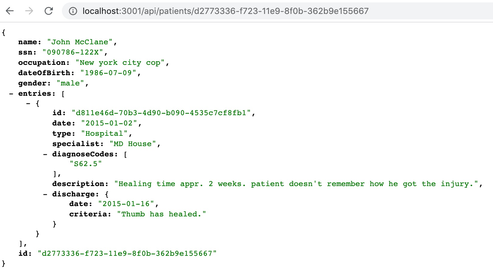
在后端正确使用类型!现在，没有必要对后端的所有条目字段进行适当的验证，只需检查字段类型是否有正确的值即可。
9.20: patientor, step5
在前端扩展一个病人的页面，列出病人条目的日期、描述和诊断代码。
你可以在前端的条目中使用相同的类型定义。对于这些练习，只需将定义从后端复制/粘贴到前端即可。
你的解决方案可以是这样的。
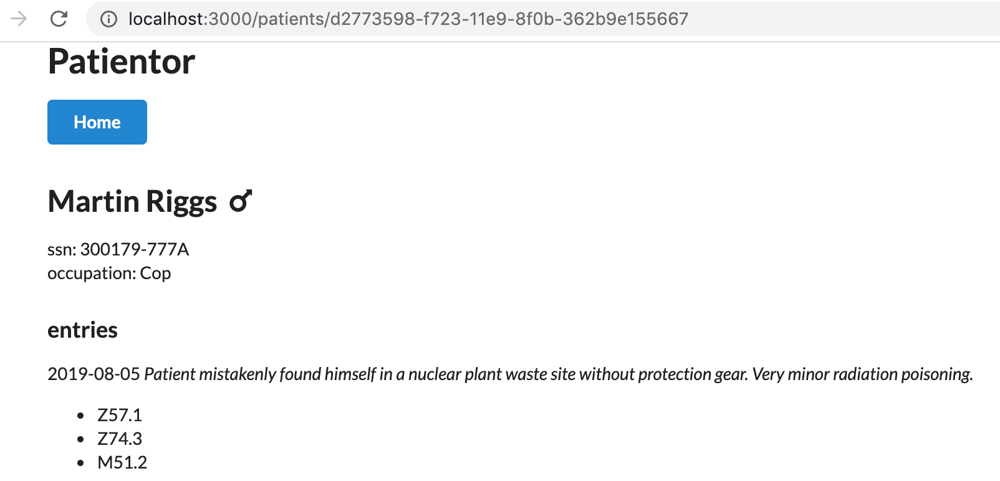
9.21: patientor, step6
从/api/diagnoses端点获取并添加诊断到应用状态。使用新的诊断数据来显示病人的诊断代码的描述。
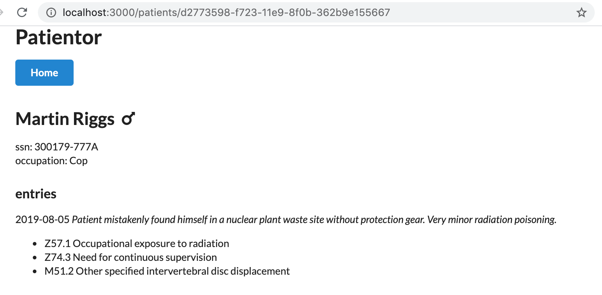
9.22: patientor, step7
在病人的页面中扩展条目列表，包括条目的细节，用一个新的组件显示病人条目的其他信息，区分不同类型。
你可以使用例如图标或其他一些材料用户界面组件来为你的列表获得适当的视觉效果。
你应该使用一个基于切换案例的渲染和详尽的类型检查，这样就不会有案例被遗忘。
像这样。
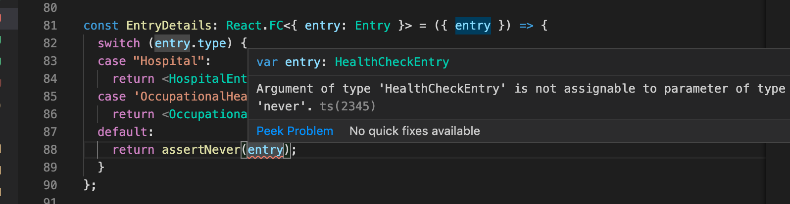
列表中的结果条目可以看起来是这样的。
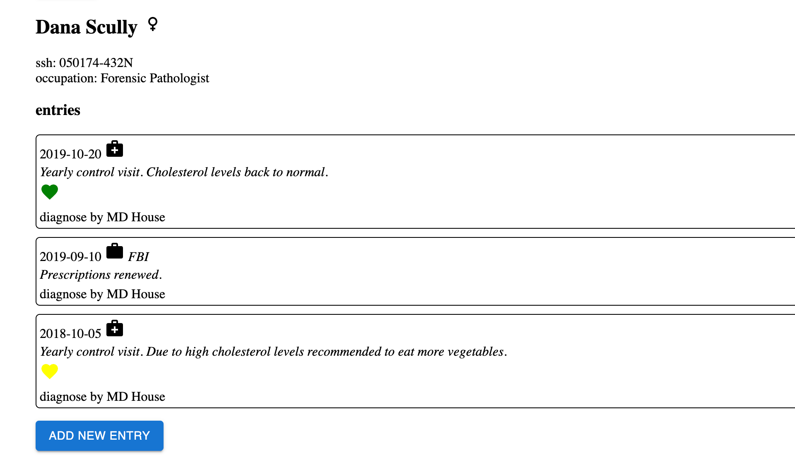
Add patient form
在React中，表单处理有时是一个相当烦人的问题。这就是为什么我们决定利用Formik包来处理我们应用的添加病人表单。下面是Formik文档中的一个小介绍。
Formik是一个小库，它可以帮助你解决3个最烦人的部分。
通过将上述所有内容集中在一个地方，Formik将保持事情的条理性--使测试、重构和推理你的表单变得轻而易举。
表单的代码可以从src/AddPatientModal/AddPatientForm.tsx中找到，一些表单字段的帮助器可以从src/AddPatientModal/FormField.tsx中找到。
看看AddPatientForm.tsx的顶部，你可以看到我们已经为我们的表单值创建了一个类型，我们简单地称之为PatientFormValues。这个类型是Patient类型的修改版，省略了id和entries属性。我们不希望用户在创建一个新病人时能够提交这些属性。id是由后端创建的，entries只能为现有病人添加。
export type PatientFormValues = Omit<Patient, "id" | "entries">;
接下来，我们为我们的表单组件声明prop。
interface Props {
onSubmit: (values: PatientFormValues) => void;
onCancel: () => void;
}
你可以看到，这个组件需要两个prop。onSubmit和onCancel。
这两个都是回调函数，返回void。onSubmit函数应该接收一个
类型为PatientFormValues的对象作为参数，这样回调就可以处理我们的表单值。
看一下AddPatientForm函数组件，你可以看到我们已经绑定了Props作为我们组件的props，并且我们从这些props中解构onSubmit和onCancel。
export const AddPatientForm = ({ onSubmit, onCancel }: Props) => {
// ...
}
在我们继续之前，让我们看一下我们在FormField.tsx中的表单助手。
如果你检查从文件中导出的内容，你会发现类型GenderOption和功能组件SelectField和TextField。
让我们仔细看看SelectField和它周围的类型。
首先，我们为每个选项对象创建一个通用类型，它包含一个值和一个标签。这些是我们想在表单的选择字段中允许的选项对象的类型。
由于我们想允许的唯一选项是不同的性别，我们设定value应该是Gender的类型。
export type GenderOption = {
value: Gender;
label: string;
};
在AddPatientForm.tsx中，我们为genderOptions变量使用GenderOption类型，声明它是一个包含GenderOption类型对象的数组。
const genderOptions: GenderOption[] = [
{ value: Gender.Male, label: "Male" },
{ value: Gender.Female, label: "Female" },
{ value: Gender.Other, label: "Other" }
];
接下来，看一下SelectFieldProps类型。它定义了我们的SelectField组件的prop的类型。在那里，你可以看到，options是一个GenderOption类型的数组。
type SelectFieldProps = {
name: string;
label: string;
options: GenderOption[];
};
函数组件SelectField本身看起来有点神秘，但它只是渲染了标签，一个选择元素，和所有给定的选项元素（或者，实际上，它们的标签和值）。
const FormikSelect = ({ field, ...props }: FieldProps) =>
<Select {...field} {...props} />;
export const SelectField = ({ name, label, options }: SelectFieldProps) => (
<>
<InputLabel>{label}</InputLabel>
<Field
fullWidth
style={{ marginBottom: "0.5em" }}
label={label}
component={FormikSelect}
name={name}
>
{options.map((option) => (
<MenuItem key={option.value} value={option.value}>
{option.label || option.value}
</MenuItem>
))}
</Field>
</>
);
现在让我们继续看TextField组件。这个组件渲染了一个TextFieldMUI，它是一个带有标签的Material UI TextField。
interface TextProps extends FieldProps {
label: string;
placeholder: string;
}
export const TextField = ({ field, label, placeholder }: TextProps) => (
<div style={{ marginBottom: "1em" }}>
<TextFieldMUI
fullWidth
label={label}
placeholder={placeholder}
{...field}
/>
<Typography variant="subtitle2" style={{ color: "red" }}>
<ErrorMessage name={field.name} />
</Typography>
</div>
);
注意我们使用Formik ErrorMessage组件，在需要时为输入的内容渲染一个错误信息。
该组件在引擎盖下做了所有事情，我们不需要指定它应该做什么。
通过使用propform，我们也可以在该组件中获得错误信息。
export const TextField = ({ field, label, placeholder, form }: TextProps) => {
console.log(form.errors);
// ...
}
现在，回到AddPatientForm.tsx中的实际表单组件。
函数组件AddPatientForm渲染了一个Formik组件。Formik组件是一个包装器，它需要两个props。initialValues和onSubmit。这些prop的作用是不言而喻的。
Formik包装器会跟踪你的表单的状态，然后通过props将它和一些可接受的方法和事件处理程序暴露给你的表单。
我们还使用了一个可选的validateprop，它期望一个验证函数并返回一个包含可能错误的对象。在这里，我们只检查我们的文本字段是不是虚假的，但它可以很容易地包含例如社会安全号码格式的一些验证或类似的东西。由这个函数定义的错误信息可以显示在相应字段的ErrorMessage组件上。
首先，看一下整个组件。我们以后会详细讨论不同的部分。
interface Props {
onSubmit: (values: PatientFormValues) => void;
onCancel: () => void;
}
export const AddPatientForm = ({ onSubmit, onCancel }: Props) => {
return (
<Formik
initialValues={{
name: "",
ssn: "",
dateOfBirth: "",
occupation: "",
gender: Gender.Other
}}
onSubmit={onSubmit}
validate={values => {
const requiredError = "Field is required";
const errors: { [field: string]: string } = {};
if (!values.name) {
errors.name = requiredError;
}
if (!values.ssn) {
errors.ssn = requiredError;
}
if (!values.dateOfBirth) {
errors.dateOfBirth = requiredError;
}
if (!values.occupation) {
errors.occupation = requiredError;
}
return errors;
}}
>
{({ isValid, dirty }) => {
return (
<Form className="form ui">
<Field
label="Name"
placeholder="Name"
name="name"
component={TextField}
/>
<Field
label="Social Security Number"
placeholder="SSN"
name="ssn"
component={TextField}
/>
<Field
label="Date Of Birth"
placeholder="YYYY-MM-DD"
name="dateOfBirth"
component={TextField}
/>
<Field
label="Occupation"
placeholder="Occupation"
name="occupation"
component={TextField}
/>
<SelectField
label="Gender"
name="gender"
options={genderOptions}
/>
<Grid>
<Grid item>
<Button
color="secondary"
variant="contained"
style={{ float: "left" }}
type="button"
onClick={onCancel}
>
Cancel
</Button>
</Grid>
<Grid item>
<Button
style={{ float: "right" }}
type="submit"
variant="contained"
disabled={!dirty || !isValid}
>
Add
</Button>
</Grid>
</Grid>
</Form>
);
}}
</Formik>
);
};
export default AddPatientForm;
作为我们的Formik包装器的一个子节点，我们有一个函数来返回表单内容。
我们使用Formik's Form 来渲染实际的表单元素。在表单元素中，我们使用我们在FormField.tsx中创建的TextField和SelectField组件。
最后，我们创建两个按钮：一个用于取消表单提交，一个用于提交表单。取消按钮在被点击时直接调用onCancel回调。
提交按钮会触发Formik的onSubmit事件，它反过来使用组件prop中的onSubmit回调。只有当表单是valid和dirty时，提交按钮才会被启用，这意味着用户已经编辑了一些字段。
我们通过Formik处理表单提交，因为它允许我们在执行实际提交之前调用验证函数。如果验证函数返回任何错误，提交就被取消了。
按钮被设置在Material UI Grid内，以便轻松地将它们挨在一起。
<Grid>
<Grid item>
<Button
color="secondary"
variant="contained"
style={{ float: "left" }}
type="button"
onClick={onCancel}
>
Cancel
</Button>
</Grid>
<Grid item>
<Button
style={{ float: "right" }}
type="submit"
variant="contained"
disabled={!dirty || !isValid}
>
Add
</Button>
</Grid>
</Grid>
onSubmit回调已经从我们的病人列表页一路传递下来。
基本上，它向我们的后端发送HTTP POST请求，将从后端返回的病人添加到我们应用的状态中，并关闭模态。
如果后端返回一个错误，错误就会显示在表单上。
这是我们的提交函数。
const submitNewPatient = async (values: FormValues) => {
try {
const { data: newPatient } = await axios.post<Patient>(
`${apiBaseUrl}/patients`,
values
);
dispatch({ type: "ADD_PATIENT", payload: newPatient });
closeModal();
} catch (error: unknown) {
let errorMessage = 'Something went wrong.'
if(axios.isAxiosError(error) && error.response) {
console.error(error.response.data);
errorMessage = error.response.data.error;
}
setError(errorMessage);
}
};
有了这个材料，你应该能够完成这部分的其余练习。当有疑问时，可以尝试阅读现有的代码来寻找如何进行的线索!
Exercises 9.23.-9.27.
9.23: patientor, step8
我们已经确定病人可以有不同种类的条目。我们还没有办法在我们的应用中为病人添加条目，所以，目前，它作为一个电子医疗记录是非常没用的。
你的下一个任务是在你的后端添加端点/api/patients/:id/entries，通过这个端点你可以为一个病人发布条目。
记住，我们的应用中有不同类型的条目，所以我们的后端应该支持所有这些类型，并检查每一种类型至少有所有必要的字段。
9.24: patientor, step9
现在我们的后端支持添加条目，我们要在前端添加相应的功能。在这个练习中，你应该添加一个为病人添加条目的表单。访问该表单的一个直观的地方是在病人的页面上。
在这个练习中，只需支持一个条目类型，你不必处理任何错误。如果在表单中填入有效的数据时，可以创建一个新的条目，这就足够了。
成功提交后，新条目应被添加到正确的病人中，病人页面上的条目应被更新以包含新条目。
如果你愿意，你可以在这个练习中重新使用添加病人表单中的一些代码，但这并不是一个要求。
注意文件FormField.tsx有一个现成的组件叫_DiagnosisSelection_，可以用来设置字段diagnoses。
它可以如下使用。
const AddEntryForm = ({ onSubmit, onCancel }: Props) => {
const [{ diagnoses }] = useStateValue() // highlight-line
return (
<Formik
initialValues={{
/// ...
}}
onSubmit={onSubmit}
validate={values => {
/// ...
}}
>
{({ isValid, dirty, setFieldValue, setFieldTouched }) => { // highlight-line
return (
<Form className="form ui">
// ...
// highlight-start
<DiagnosisSelection
setFieldValue={setFieldValue}
setFieldTouched={setFieldTouched}
diagnoses={Object.values(diagnoses)}
/>
// highlight-end
// ...
</Form>
);
}}
</Formik>
);
};
在类型上做一些小的调整，现成的组件SelectField可以用于健康检查等级。
9.25: patientor, step10
扩展你的解决方案，使其在某些所需的值丢失或格式不正确时显示错误信息。
9.26: patientor, step11
扩展你的解决方案，使其支持两个条目类型，并在某些必需的值丢失或格式不正确时显示错误信息。你不需要关心服务器响应中可能出现的错误。
做这个练习的最简单但肯定不是最优雅的方法是为每个不同的条目类型设置一个单独的表单。如果你只用一个表单，让这些类型正常工作可能是一个小小的挑战。
注意，如果你需要根据用户的选择改变显示的表单，你可以使用渲染函数的参数_values_访问表单的值。
<Formik
initialValues={}
onSubmit={onSubmit}
validate={}
>
{({ isValid, dirty, setFieldValue, setFieldTouched, values }) => { // highlight-line
console.log(values); // highlight-line
return (
<Form className="form ui">
</Form>
);
}}
</Formik>
9.27: patientor, step12
扩展你的解决方案，使其支持所有的条目类型，并在某些必需的值丢失或格式不正确时显示错误信息。你不需要关心服务器响应中可能出现的错误。
Submitting exercises and getting the credits
这一部分的练习是通过提交系统提交的，就像前几部分一样，但与前几部分不同的是，提交到一个不同的 "课程实例"。请记住，你必须完成至少24道练习才能通过这一部分!
一旦你完成了练习并想获得学分，请通过练习提交系统告诉我们你已经完成了课程。
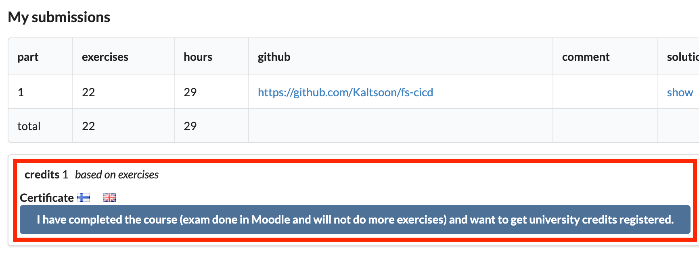
注意 "在Moodle中完成的考试 "是指全栈开放课程的考试，在你从这部分获得学分之前必须完成。
注意你需要注册相应的课程部分以获得注册的学分，更多信息见这里。
你可以通过点击其中一个旗子图标下载完成这部分的证书。旗帜图标与证书的语言相对应。